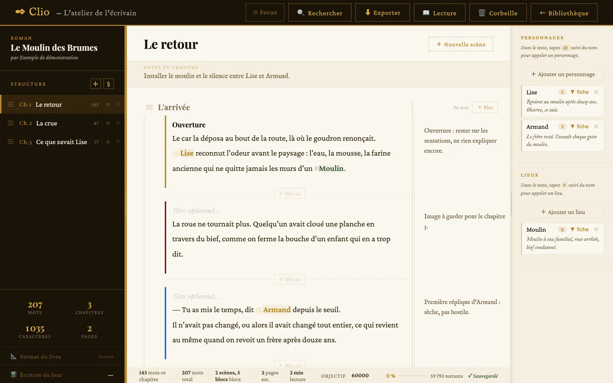
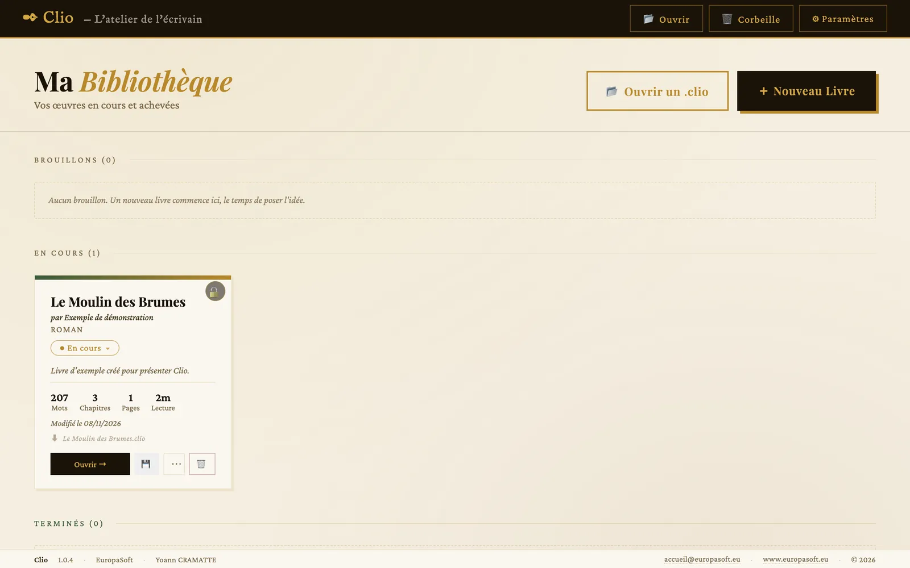
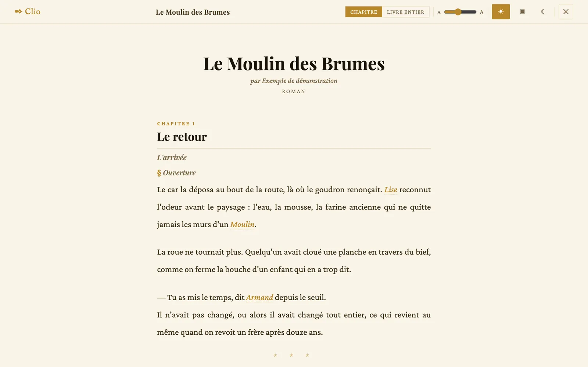
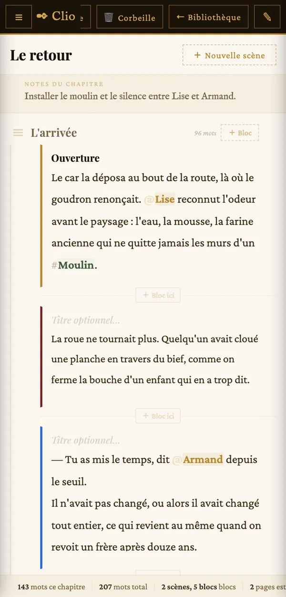

Clio
L’atelier de l’écrivain
Clio est un traitement de texte pour romanciers, fondé sur l’écriture par fragments. Vous écrivez des morceaux — une scène, une réplique, une idée — puis vous les assemblez et les réordonnez jusqu’à trouver le bon ordre.
- Hors ligne
- Sans compte
- Web, ordinateur, tablette, Android
- Version 1.0.4

Comment ça marche
- Créez un livre. Titre, auteur, genre et objectif de mots. Il rejoint votre bibliothèque, rangé parmi les brouillons, les livres en cours ou les livres terminés.
- Découpez-le. Un livre se compose de chapitres, et chaque chapitre de scènes. Préface, prologue, épilogue ou annexe ont leur propre type de section.
- Écrivez par blocs. Le bloc est l’unité de pensée : un fragment de texte, avec un titre facultatif, une note en marge et une couleur d’accent pour le repérer d’un coup d’œil.
- Réordonnez. Un bloc se déplace dans sa scène, vers une autre scène ou vers un autre chapitre. Sa note le suit, toujours alignée sur lui.
- Relisez le texte final. La lecture reconstitue le livre en enchaînant les blocs dans l’ordre, chapitre par chapitre ou livre entier, sans aucune trace de la structure de travail.
- Gardez votre livre dans un fichier. Un fichier
.cliocontient tout le livre : vous le rangez où vous voulez et l’ouvrez sur un autre appareil.


Ce que vous pouvez faire
- Suivre vos personnages et vos lieux Chacun a sa fiche. Dans le texte, tapez
@devant un personnage ou#devant un lieu pour l’appeler ; le signe disparaît à la lecture et à l’export. - Annoter sans encombrer Notes de bloc en marge, notes de scène et notes de chapitre : vos idées de travail restent à côté du texte, jamais dedans.
- Ajouter des images Un bloc peut porter des images avec leur légende, enregistrées avec le livre.
- Mesurer votre avancée Nombre de mots par chapitre et pour le livre, pages estimées, temps de lecture et progression vers votre objectif.
- Glisser-déposer partout À la souris sur ordinateur, au doigt sur tablette et téléphone.
- Retrouver ce que vous avez supprimé Les livres supprimés passent d’abord par la corbeille.

L’installer
Fiche Google Play : [À COMPLÉTER : URL de la fiche Google Play]
| Appareil | Comment faire |
|---|---|
| Ordinateur | Ouvrez Clio dans Chrome ou Edge, puis utilisez l’icône d’installation de la barre d’adresse. |
| Android | Installez Clio depuis Google Play, ou ajoutez la version web à l’écran d’accueil depuis le menu du navigateur. |
| iPhone, iPad | Dans Safari, bouton Partager, puis Sur l’écran d’accueil. |
Une fois installée, Clio démarre sans réseau : ses fichiers sont gardés sur l’appareil. Les mises à jour arrivent d’elles-mêmes au lancement suivant.
Vos textes vous appartiennent
Clio ne collecte aucune donnée. Vos livres, vos notes et vos réglages restent sur votre appareil et dans les fichiers .clio que vous enregistrez vous-même. L’application fonctionne sans compte et sans connexion : elle ne contient aucun appel réseau.
Le format .clio est ouvert : une archive ZIP ordinaire dont tout le contenu est du texte lisible (JSON). Sa norme est publiée, si bien que votre livre reste lisible même sans Clio.
Enregistrez régulièrement votre livre en .clio. Sur l’appareil, Clio garde vos livres dans le stockage du navigateur. Effacer les données du navigateur les supprime ; le fichier .clio est la copie qui survit à cet effacement.
En bref
- Version
- 1.0.4
- Plateformes
- Navigateur web, installable comme application sur ordinateur, tablette et téléphone ; Android via Google Play
- Fonctionnement
- Hors ligne, sans compte, sans serveur
- Fichiers
.clio: archive ZIP de fichiers JSON, format documenté- Licence
- Logiciel propriétaire d’EuropaSoft ; code source consultable sur GitHub
Une question sur Clio ?
Un format d’export, un usage particulier, un défaut à signaler : écrivez-nous, nous lisons tout.